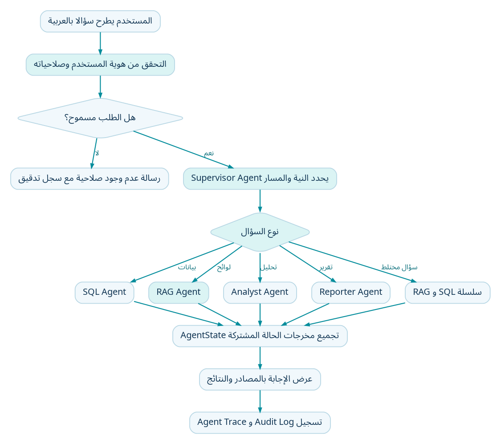
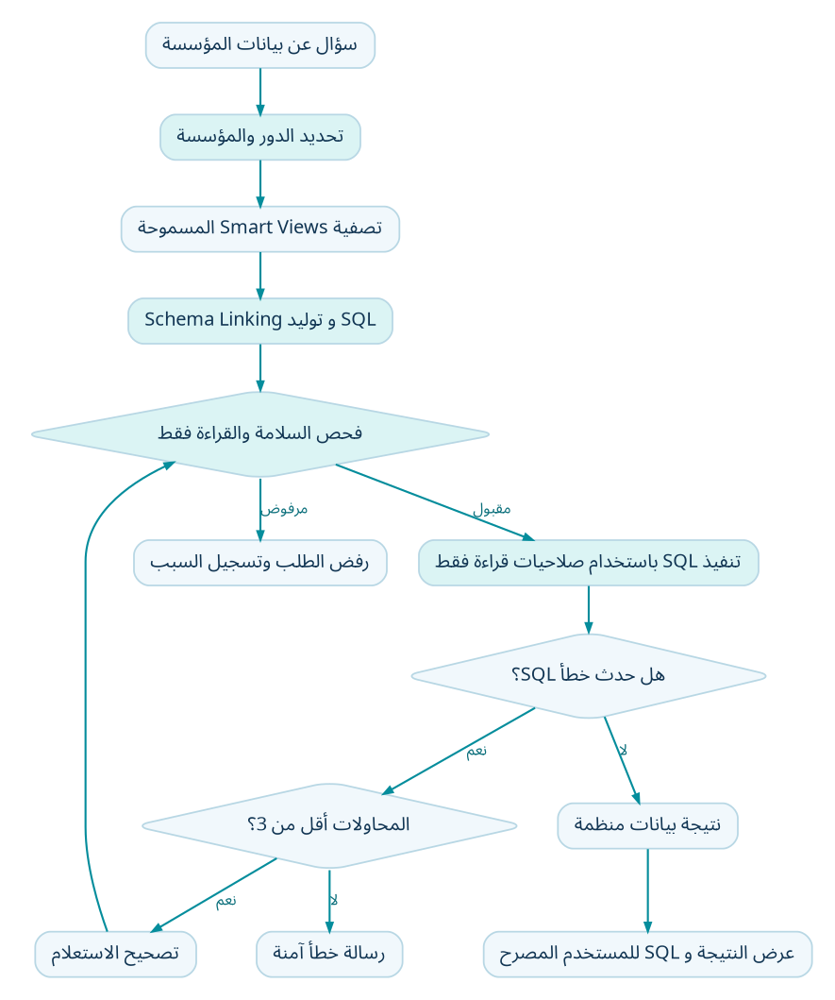
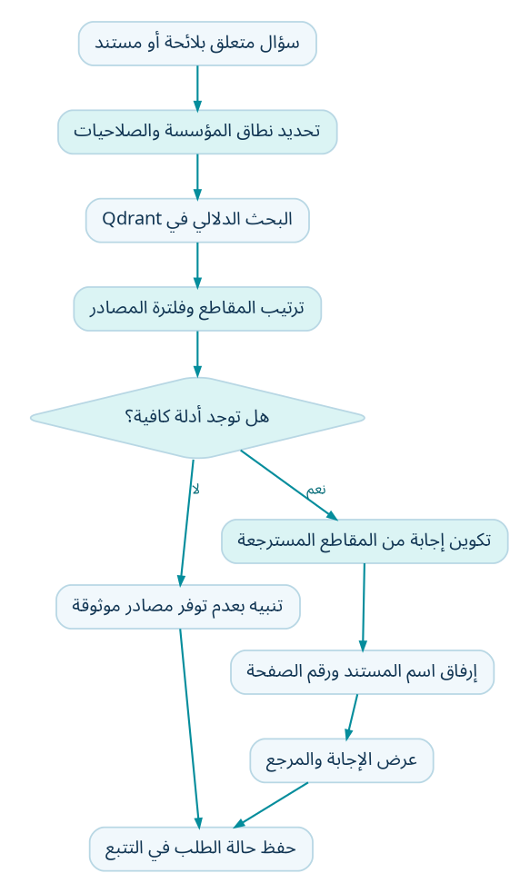
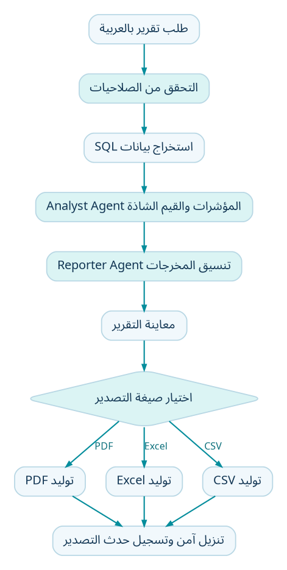
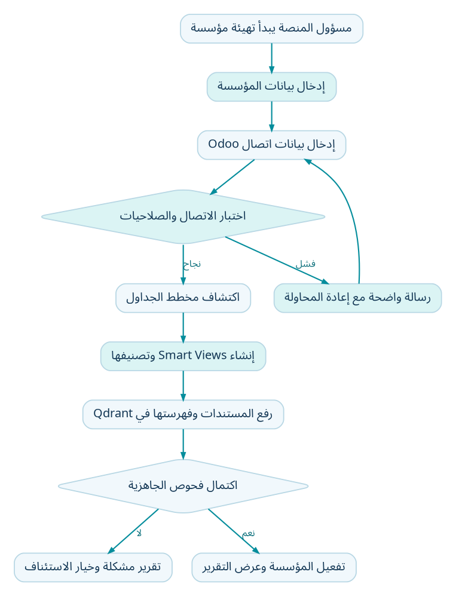
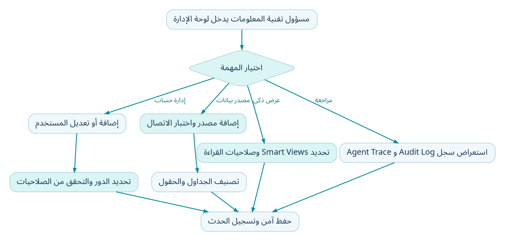
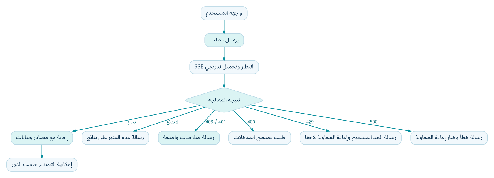

الاستعلام وتنسيق الوكلاء
ملف Mermaid · الصورة PNG · النسخة المتجهية SVG



تحويل اللغة الطبيعية إلى SQL بأمان
ملف Mermaid · الصورة PNG · النسخة المتجهية SVG



البحث الدلالي في المستندات مع المصادر
ملف Mermaid · الصورة PNG · النسخة المتجهية SVG



إنشاء التقارير والتصدير
ملف Mermaid · الصورة PNG · النسخة المتجهية SVG



التهيئة الذكية للمؤسسات
ملف Mermaid · الصورة PNG · النسخة المتجهية SVG



إدارة الأدوار والمصادر والعروض والتدقيق
ملف Mermaid · الصورة PNG · النسخة المتجهية SVG



حالات الانتظار والنجاح والأخطاء
ملف Mermaid · الصورة PNG · النسخة المتجهية SVG


